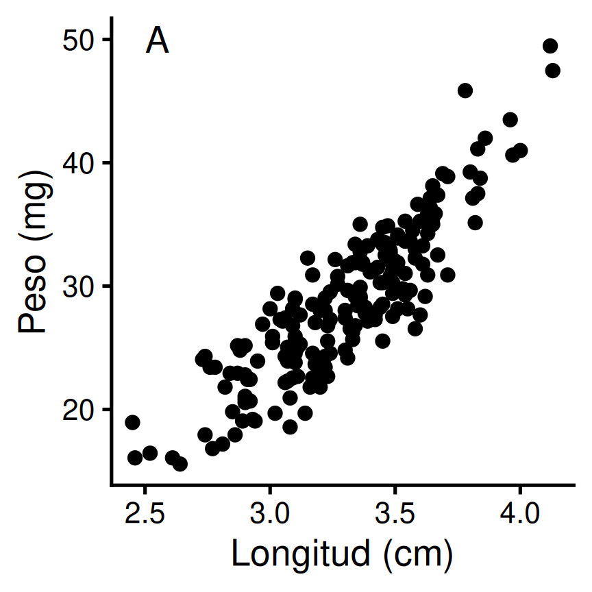
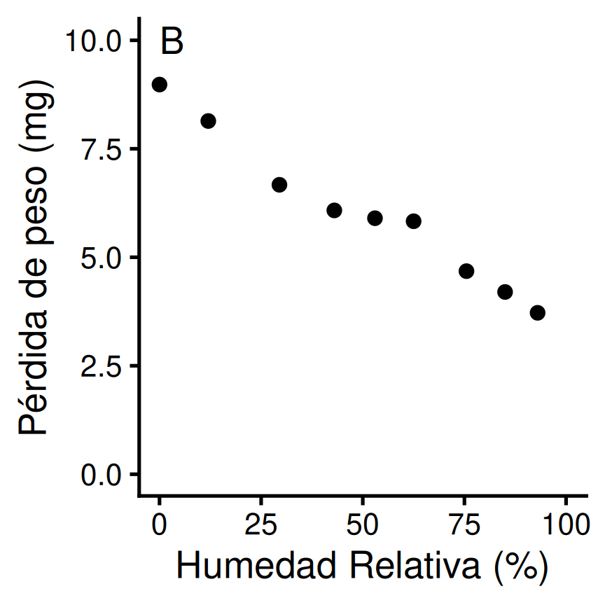
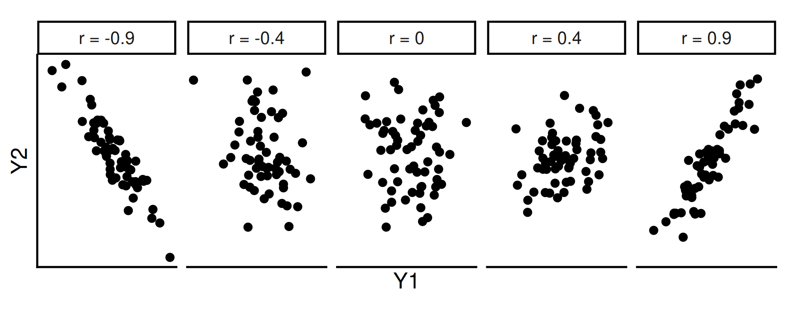
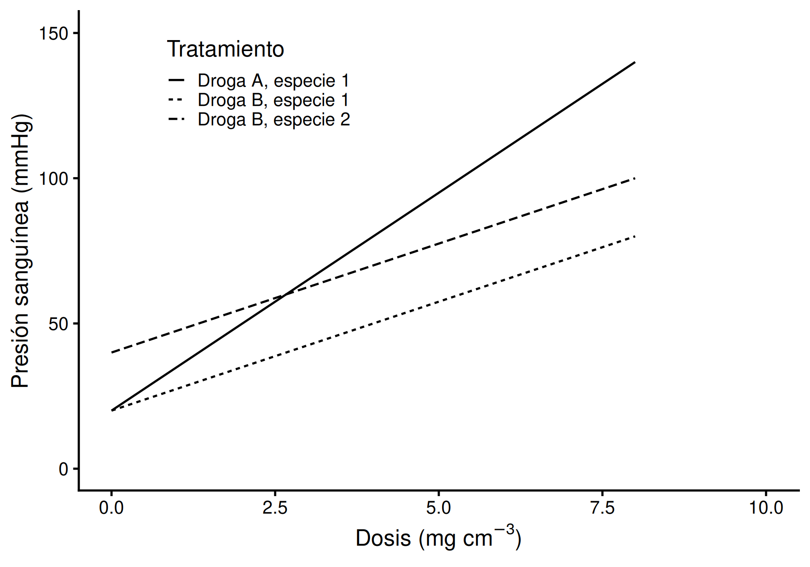
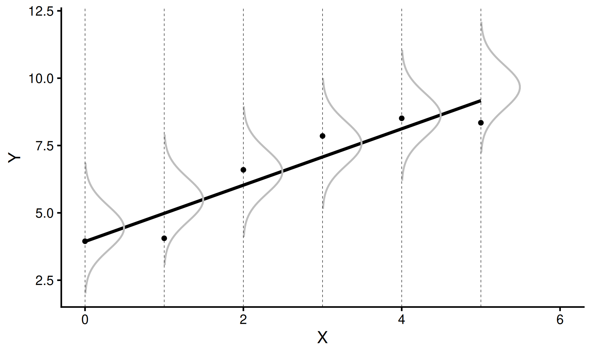
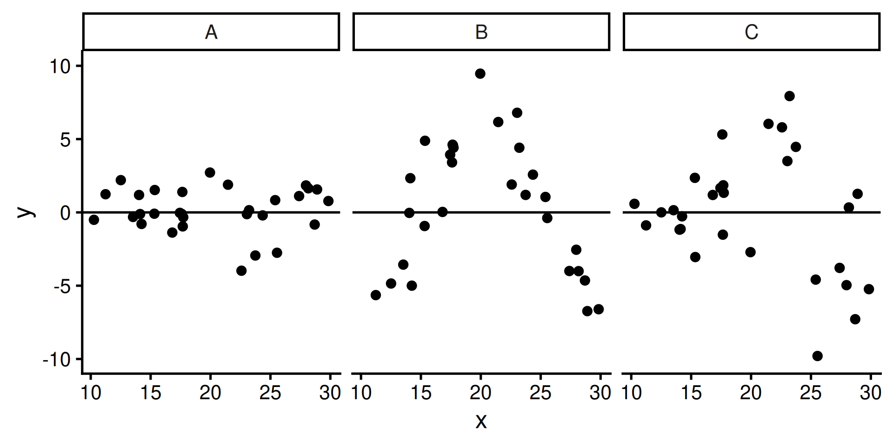
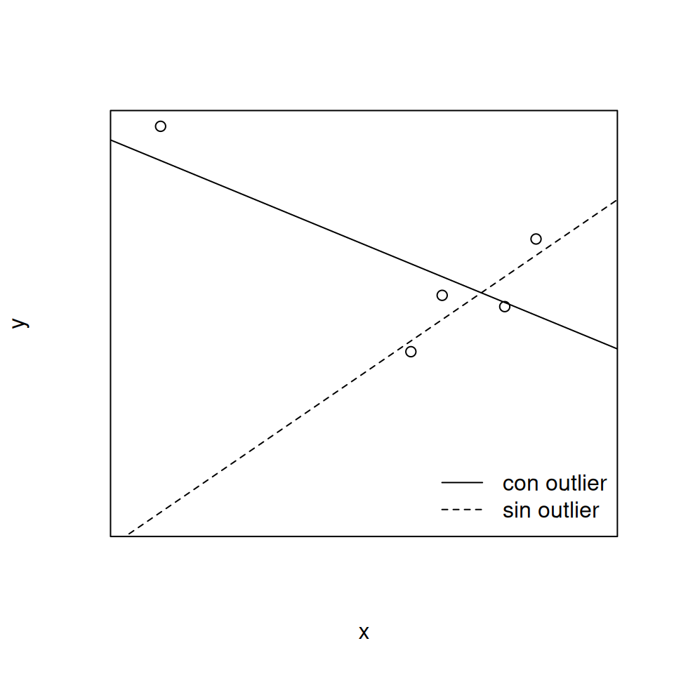
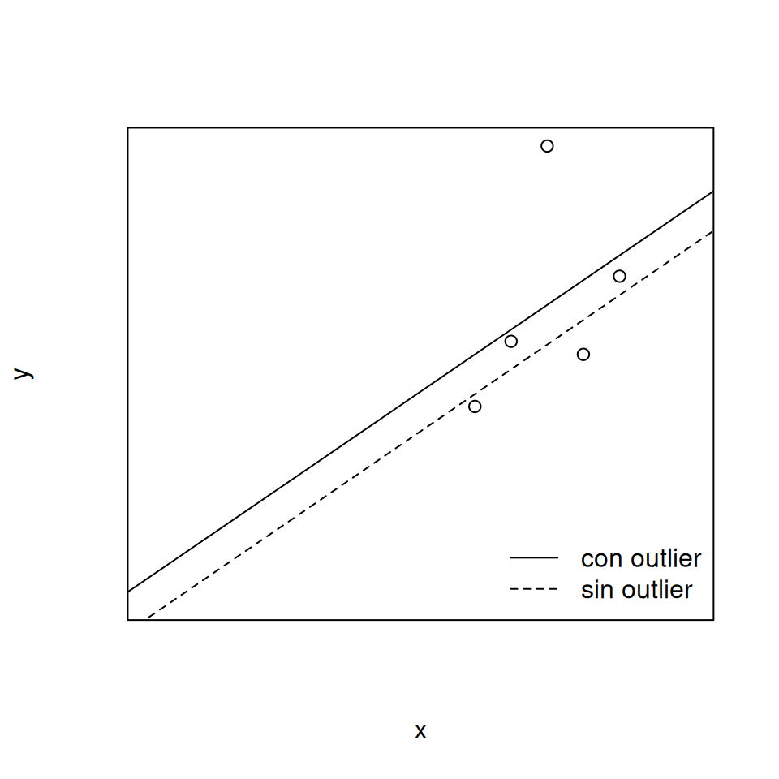
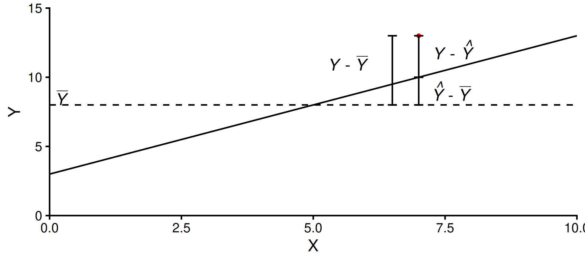
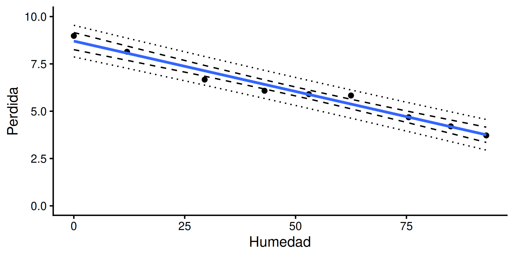

Análisis de Correlación y Regresión
Estadística Básica | 2026
Hoja de ruta
- Relación entre variables
- Análisis de Correlación
- Covarianza / Correlación
- Tipos de relación
- Prueba de hipótesis y supuestos
- Regresión lineal simple
- Modelo y supuestos
- Estimación por mínimos cuadrados
- Residuales y puntos de influencia
- ANOVA y bondad de ajuste
- Inferencia sobre los parámetros
- Predicción
Preparando R/RStudio
Abrir proyecto en RStudio
Cargar los paquetes a usar usando
library()
Relación entre variables
Dos preguntas distintas
¿Cual es la asociación entre peso y longitud de semillas de trigo (variables aleaorias?

¿Cual es el modelo que relaciona la pérdida de peso de insectos según la humedad relativa?

Correlación
Regresión
Análisis de Correlación
Covarianza
Mide el grado de asociación mutua entre dos variables \(Y_1\) y \(Y_2\), en la población:
\[\text{Cov}(Y_1,Y_2) = E \left\{ \left[ Y_1 - \text{E}(Y_1) \right] \left[Y_2 - \text{E}(Y_2) \right] \right\}\]
Toma valores entre \(-\infty\) y \(+\infty\); el signo indica el sentido de la asociación
A mayor \(|\text{Cov}(Y_1,Y_2)|\), mayor asociación. Si \(\text{Cov}(Y_1,Y_2) = 0\) no hay asociación
Depende de las unidades de \(Y_1\) e \(Y_2\), por lo tanto es difícil de interpretar
Estimador muestral:
\[s_{Y_1Y_2} = \dfrac{\sum (Y_1 - \bar{Y_1})(Y_2 - \bar{Y_2})}{n-1}\]
Ejemplo
Rendimiento de trigo y soja de segunda en una muestra de 10 lotes (qq/ha)
Varianza/Covarianza
Note
La autocovarianza de una variable es su varianza: \(\text{Cov}(Y,Y) = \text{Var}(Y)\)
Correlación
\[\rho = \dfrac{\text{Cov}(Y_1,Y_2)}{\sigma_{Y_1} \sigma_{Y_2}}\]
No depende de las unidades de \(Y_1\) e \(Y_2\) (adimensional, estandarizado)
\(\rho \in (-1, 1)\), el signo indica el sentido de la correlación
A mayor \(|\rho|\), mayor correlación. Si \(\rho = 0\), no hay correlación
Fácil de interpretar y comparable entre estudios
Estimador muestral:
\[r = \hat{\rho} = \dfrac{\sum (Y_1 - \bar{Y_1})(Y_2 - \bar{Y_2})}{\sqrt{\sum (Y_1 - \bar{Y_1})^2}\sqrt{\sum (Y_2 - \bar{Y_2})^2}} = \dfrac{s_{Y_1Y_2}}{s_{Y_1}s_{Y_2}}\]
Tipos de correlación

Ejemplo: semillas de trigo
Ejemplo (semillas de trigo)
Jing et al. (2007) estudiaron peso, longitud, diámetro y dureza de 190 semillas de trigo diploide (Triticum monococcum) obtenidas al azar.
ID Peso Long Diametro Humedad Dureza
1 1 30.15 3.27 2.09 10.27 -16.63
2 2 35.51 3.65 2.34 10.61 -8.27
3 3 29.16 3.36 2.15 10.27 -21.45
4 4 16.82 2.77 1.79 11.05 4.13
5 5 23.42 2.78 1.80 10.02 -2.05
6 6 31.77 3.37 2.15 10.34 -41.78¿Existe asociación entre el peso y la longitud de la semilla?
¿Y entre el peso y la dureza del endosperma?
Explorando la asociación
Covarianza y correlación en R
Ejemplo (semillas de trigo, cont.)
Entre un par de variables
Prueba de hipótesis sobre \(\rho\)
Hipótesis
\[H_0: \rho = 0 \quad vs \quad H_1: \rho \neq 0\]
Si \(Y_1\) e \(Y_2\) tienen distribución Normal bivariada, asumiendo \(H_0\), \(r\) se distribuye simétricamente con \(\mu_r = 0\) y \(\sigma^2_r = \dfrac{1-r^2}{n-2}\)
Estadístico de prueba
\[t = \dfrac{r}{\sqrt{\dfrac{1-r^2}{n-2}}} \sim t_{n-2}\]
Rechazar \(H_0\) si \(|t_0| > t_{1-\alpha/2, n-2}\) o \(P(|t_0| > t) \le \alpha\)
Supuestos
\(Y_1\) e \(Y_2\) siguen una distribución normal bivariada
Las varianzas son constantes
Relación lineal entre \(Y_1\) e \(Y_2\)
La muestra de pares \((Y_1, Y_2)\) fue extraída al azar
Prueba de correlación en R
Ejemplo (Peso vs. Long)
Pearson's product-moment correlation
data: Peso and Long
t = 25.751, df = 188, p-value < 2.2e-16
alternative hypothesis: true correlation is not equal to 0
95 percent confidence interval:
0.8467116 0.9106082
sample estimates:
cor
0.8826743 Conclusión: se rechaza \(H_0\) (p < 0.01); hay asociación fuerte y positiva entre Peso y Long.
Ejemplo (Peso vs. Dureza)
Pearson's product-moment correlation
data: Peso and Dureza
t = -2.9024, df = 188, p-value = 0.004146
alternative hypothesis: true correlation is not equal to 0
95 percent confidence interval:
-0.33943682 -0.06670315
sample estimates:
cor
-0.2070901 Conclusión: se rechaza \(H_0\) (p < 0.01), pero la asociación es de baja magnitud y sin importancia práctica.
Regresión lineal simple
Generalidades
Procedimiento estadístico para estimar la relación funcional entre variables cuantitativas y realizar predicciones.
Principales usos
Inferir relaciones causales: depende de la naturaleza del estudio (observacional o experimental)
Descripción de leyes científicas: modelos empíricos
Predicción: dentro (interpolar) y a veces fuera (extrapolar) del rango de \(X\) observado
Comparación de observaciones
Control estadístico: análisis de covarianza
Sustitución de variables: predecir variables de difícil medición a partir de otras más fáciles de medir
Modelo lineal
\[\underbrace{Y_i}_{\substack{\text{variable} \\ \text{aleatoria}}} = \underbrace{\beta_0 + \beta_1 X_i}_{\text{sistemático}} + \underbrace{e_i}_{\text{aleatorio}}\]
El comportamiento de \(Y\) se descompone en:
una parte sistemática: ordenada \(\beta_0\) y pendiente \(\beta_1\)
una parte aleatoria (error): variación no descripta por el modelo

Supuestos del modelo
\(X\) es una variable fija, medida sin error (Modelo 1)
Para cualquier \(X_i\), \(\text{E}(Y_i) = \beta_0 + \beta_1 X_i\), o bien \(\text{E}(e_i) = 0\)
Los errores \(e_i\) son independientes: \(\text{Cov}(e_i, e_j) = 0\)
Errores con distribución normal, media 0 y varianza constante: \(e_i \sim N(0, \sigma^2_e)\)
Necesarios para obtener estimadores insesgados y pruebas de hipótesis válidas.

Ejemplo: escarabajos Tribolium
Ejemplo (escarabajos Tribolium)
Pérdida de peso de nueve lotes de 25 escarabajos luego de 6 días de ayuno, a nueve condiciones de humedad relativa (Sokal & Rohlf, 2012)
Humedad Perdida
1 0.0 8.98
2 12.0 8.14
3 29.5 6.67
4 43.0 6.08
5 53.0 5.90
6 62.5 5.83
7 75.5 4.68
8 85.0 4.20
9 93.0 3.72¿Cuál es el modelo lineal que describe la pérdida de peso?
¿Es significativa la regresión?
¿Qué proporción de la variación es explicada por la humedad relativa?
¿Cuál es la pérdida de peso esperada a 20% de humedad?
Explorando los datos
Estimación de parámetros: mínimos cuadrados
Hallar \(b_0\) y \(b_1\) que minimicen la suma de cuadrados residual:
\[\phi = \sum e^2_i = \sum \left[ Y_i - \left( b_0 + b_1 X_i \right) \right]^2\]
Derivando e igualando a 0 se obtiene un sistema de ecuaciones normales, cuya solución es:
\[b_1 = \dfrac{\sum(X- \bar{X})(Y - \bar{Y})}{\sum (X- \bar{X})^2} = \dfrac{s_{XY}}{s^2_{X}}\]
\[b_0 = \bar{Y} - b_1\bar{X}\]
Error estándar residual \(s_e\)
Los residuos son las diferencias entre lo observado y lo estimado por el modelo:
\[e_i = Y_i - \hat{Y_i} = Y_i - (b_0 + b_1X_i)\]
\[s^2_e = \dfrac{\sum e^2_i}{n-2} \qquad s_e = \sqrt{s^2_e}\]
Indica la variabilidad de la distribución condicional \(Y|X\): cuanto más bajo, mejor el ajuste.
Chequeo de supuestos
A partir de los residuos \(e_i\) se puede explorar si la aproximación a los supuestos (linealidad, homocedasticidad, normalidad, independencia) es razonable.

Puntos de influencia
Puntos palanca (leverage): valores extremos en \(X\) que pueden tener alto peso en la estimación de \(\beta_1\)

Puntos de influencia: puntos palanca cuyo par tiene un valor extremo de \(Y\)

Gráficos diagnóstico
Partición de la suma de cuadrados

\[\underbrace{\sum \left(Y_i - \bar{Y} \right)^2}_{\text{SC}_{\text{Total}} \; (n-1)} = \underbrace{\sum \left(\hat{Y}_i - \bar{Y} \right)^2}_{\text{SC}_{\text{Regresión}} \; (1)} + \underbrace{\sum \left(Y_i - \hat{Y}_i \right)^2}_{\text{SC}_{\text{Error}} \; (n-2)}\]
ANOVA de la regresión
| Fuente Variación | gl | SC | CM | \(F_0\) |
|---|---|---|---|---|
| Regresión | \(1\) | \(\text{SC}_\text{Reg}\) | \(\text{CM}_\text{Reg}\) | \(\dfrac{\text{CM}_\text{Reg}}{\text{CM}_\text{Err}}\) |
| Error | \(n-2\) | \(\text{SC}_\text{Err}\) | \(\dfrac{\text{SC}_\text{Err}}{n-2}\) | |
| Total | \(n-1\) | \(\text{SC}_\text{Tot}\) |
Prueba de Hipótesis
\[H_0: \beta_1 = 0 \quad vs \quad H_1: \beta_1 \ne 0\] \[F = \dfrac{\text{CM}_{\text{Reg}}}{\text{CM}_{\text{Err}}} \sim F_{1;n-2}\]
Rechazar \(H_0\) si \(F_0 > F_{1-\alpha; 1; n-2}\) o \(P(F_0 > F) \le \alpha\)
Ejemplo
Analysis of Variance Table
Response: Perdida
Df Sum Sq Mean Sq F value Pr(>F)
Humedad 1 23.5145 23.515 267.18 7.816e-07 ***
Residuals 7 0.6161 0.088
---
Signif. codes: 0 '***' 0.001 '**' 0.01 '*' 0.05 '.' 0.1 ' ' 1Conclusión: se rechaza \(H_0\) (F = 267.18, p < 0.0001); el modelo que explica la pérdida de peso en función de la humedad relativa es estadísticamente significativo.
Inferencia sobre los parámetros
Pendiente \(\beta_1\)
\[\text{IC}_{1-\alpha} = b_1 \pm t_{n-2; 1-\alpha/2} \, s_{b_1}\]
\[H_0: \beta_1 = 0 \quad vs \quad H_1: \beta_1 \neq 0\]
\[t = \dfrac{b_1}{s_{b_1}} \sim t_{n-2}\]
Ordenada al origen \(\beta_0\)
\[\text{IC}_{1-\alpha} = b_0 \pm t_{n-2; 1-\alpha/2} \, s_{b_0}\]
\[H_0: \beta_0 = 0 \quad vs \quad H_1: \beta_0 \neq 0\]
\[t = \dfrac{b_0}{s_{b_0}} \sim t_{n-2}\]
Note
A mayor \(\sigma^2_e\) y menor dispersión de \(X\) en torno a \(\bar{X}\), menor precisión en la estimación de ambos parámetros.
:::
Resultados con summary() y confint()
Ejemplo
Call:
lm(formula = Perdida ~ Humedad, data = tribolium)
Residuals:
Min 1Q Median 3Q Max
-0.46397 -0.03437 0.01675 0.07464 0.45236
Coefficients:
Estimate Std. Error t value Pr(>|t|)
(Intercept) 8.704027 0.191565 45.44 6.54e-10 ***
Humedad -0.053222 0.003256 -16.35 7.82e-07 ***
---
Signif. codes: 0 '***' 0.001 '**' 0.01 '*' 0.05 '.' 0.1 ' ' 1
Residual standard error: 0.2967 on 7 degrees of freedom
Multiple R-squared: 0.9745, Adjusted R-squared: 0.9708
F-statistic: 267.2 on 1 and 7 DF, p-value: 7.816e-07¿Cuán bueno es el modelo? \(R^2\)
El coeficiente de determinación expresa la proporción de variación explicada por el modelo, i.e. bondad de ajuste
\[R^2 = \dfrac{\text{SC}_{\text{Regresión}}}{\text{SC}_{\text{Total}}} = 1 - \dfrac{\text{SC}_{\text{Error}}}{\text{SC}_{\text{Total}}}\]
\[0 \leq R^2 \leq 1\]
\(R^2 = 1\): el modelo explica toda la variación de \(Y\)
\(R^2 = 0\): el modelo no explica nada, no mejora a \(\hat{Y} = \bar{Y}\)
Incertidumbre de la recta vs. de una predicción
IC de la recta \(\text{E}(\hat{Y}_0|X_0)\): incertidumbre del valor esperado del modelo
\[\hat{Y}_0 \pm t_{n-2;1-\alpha/2} \, s_e \sqrt{\dfrac{1}{n} + \dfrac{\left( X_0 - \bar{X} \right)^2}{\sum (X_i - \bar{X})^2}}\]
IC de predicción de un nuevo \(Y_0\): suma además la variabilidad propia de \(Y\)
\[\hat{Y}_0 \pm t_{n-2;1-\alpha/2} \, s_e \sqrt{1 + \dfrac{1}{n} + \dfrac{\left( X_0 - \bar{X} \right)^2}{\sum (X_i - \bar{X})^2}}\]
Note
Por eso el intervalo de predicción siempre es más amplio que el intervalo de confianza de la recta.
Graficando los intervalos
Ejemplo (Tribolium, cont.)
IC <- data.frame(predict(mod, interval = "confidence"))
IP <- data.frame(predict(mod, interval = "prediction"))
tribolium <- tribolium %>%
mutate(LI = IC$lwr, LS = IC$upr, LIP = IP$lwr, LSP = IP$upr)
ggplot(tribolium) +
aes(x = Humedad, y = Perdida) +
geom_point() +
geom_smooth(method = "lm", se = FALSE) +
geom_line(aes(y = LI), linetype = 2) +
geom_line(aes(y = LS), linetype = 2) +
geom_line(aes(y = LIP), linetype = 3) +
geom_line(aes(y = LSP), linetype = 3) +
ylim(0, 10)
Predecir con el modelo
Ejemplo (Tribolium, cont.)
¿Qué pérdida de peso se espera en escarabajos sometidos a 20% de humedad relativa?
fit lwr upr
1 7.639584 6.864008 8.41516Conclusión: se espera una pérdida puntual de 7.63 mg, y con 95% de confianza la pérdida estará entre 6.86 y 8.41 mg.